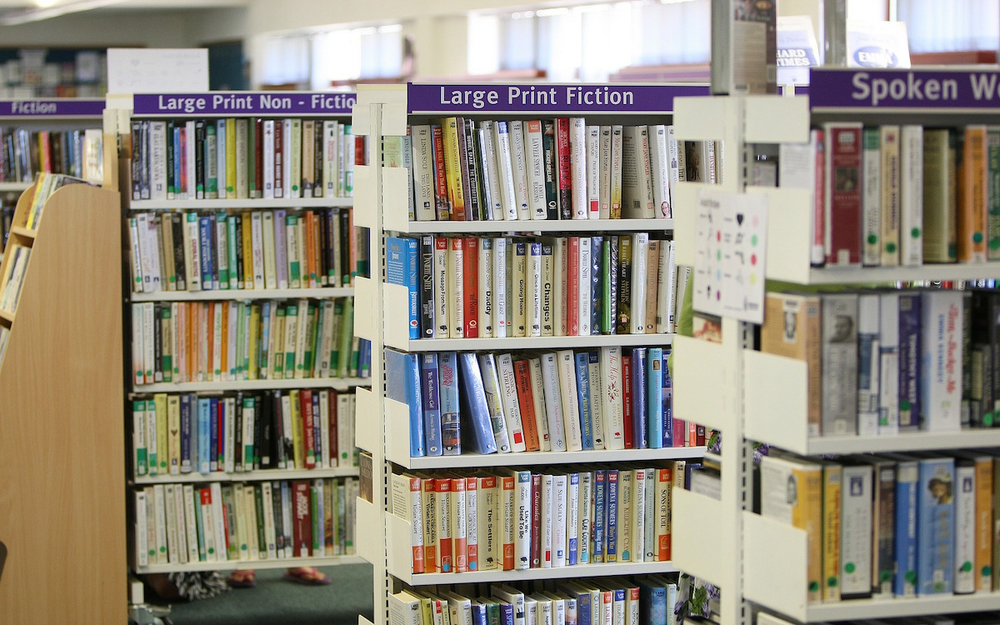
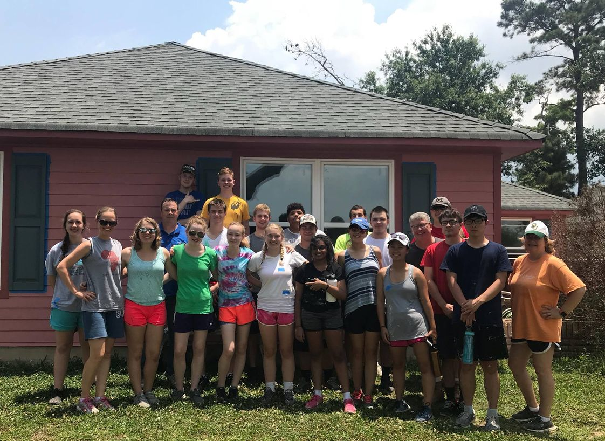
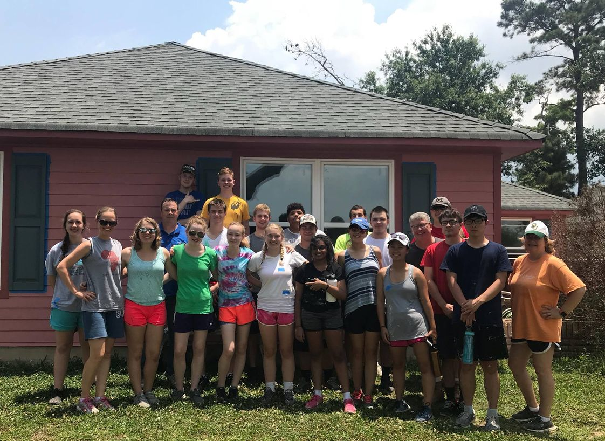

Cesar Veliz
So I was born in Hawthorne, CA in 2002 but I was actually raised in Gardena but spent most of my teenage years in Los Angeles. Yes, I know that seems a little confusing but every aspect of people's lives seems kind of confusing to certain extent.
I went to school in different areas around Los Angeles so I can never really say that I am from a certain place. That feels kind of off to me and it always seemed weird to me. It's like lacking identity in a way and it doesn't sit well with me.
A simple bio would be nice to have but even people with the most simplest bios would love to have something a little more different. I feel like I've been to so many places but yet have stayed in the same place forever.
I would love to back this claim up with saying that my life is so exciting and different from anyone else's but it's not. It's more or less the same as anyone else and yet that even bothers me. This is starting to sound more and more like I'm unsatisfied with everything no matter
what and that might be the right assumption to make. I think that we all just want more from life than what were given but there are only a few who actually want to do the work to get it. The ones who don't just accept their fate and sometimes they're happier than the ones who try to get more.
This is supposed to be a bio and I think that the best bio is the one that is able to enter the writer's head. Isn't it weird how sometimes the happiest people on earth are the ones that accept their fate earlier on in life and enjoy working a minimum wage job even if they see no future in it. They don't have expectations
and people that go on to try to make their lives into something more than what they were given do have expectations. Happiness is life without expectations.
I'm 18 years old and I am sure no one wants to hear what an 18 year old thinks about the world, let alone happiness. I mean what do I know that much older and wiser people haven't already figured out. It feels pretentious to talk about introspective subjects such as the idea of human greed and happiness so I'll just go back to a normal college student who is supposed to pretend like they're stranded mules following directions in the middle of the desert.
What was I going to talk about? Oh right, more about the surface. I've volunteered at libraries and churches before cleaning and reorganizing books for librarians who didn't want to do it themselves. Of course I did this from the kindness of my heart and not because I felt like I needed to, that'd be a ridiculous way to judge someone's character... wouldn't it?
Experience
Christian Fellowship Club
• Learn more about this religion
• Help set up events for the club
Education
UC Riverside
University of California Riverside
Portfolio



